etherscan自定义标签插件编写
前言
Etherscan 是以太坊上应用最广泛的区块链浏览器，日常工作中经常需要使用到它。在实际使用中，经常需要在不同的地址交易信息之间来回切换，有时候会忘记了哪个地址是什么的地址。于是乎某个周五的日常工（mo）作（yu）中和同事聊到了这个，在网上搜索也没有看见有类似的插件（有也当没看见，哈哈哈哈~~~），于是突发奇想——要是做个插件，让浏览器在加载页面的时候就将自己自定义的标签渲染出来，岂不美哉！
下面就是实现的效果：
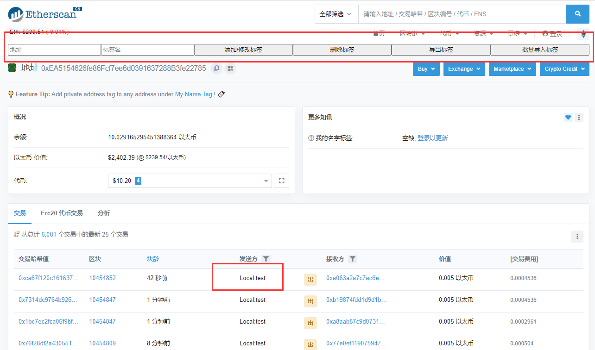
PS：由于本人CSS、Html等知识严重缺乏，没有对那些按钮啥的进行美化，全部都是用的默认样式，难看是难看了一点，能用就行~~~
概述
要完成一个自定义标签插件的实现，最开始面临的问题主要是两个方面：一是插件的编写；二是自定义标签数据存储在什么地方。
过程
首先是第一个问题，插件的编写。百度、谷歌一搜，一大堆的编写教程，这个倒不是什么大问题。
主要参考了一下文章：
最基础的一个插件是由两个部分组成的：一个是manifest文件，它用于描述 Chrome 插件的源数据，配置信息等；二是js文件，js不用多解释吧，你要实现的功能基本都在里面写。
manifest.json文件基础内容如下所示：
{
"name": "Hello Extensions",
"description" : "Hello world Extension",
"version": "1.0",
"manifest_version": 2,
"icons":{
"16": "img/icon.png",
"48": "img/icon.png",
"128": "img/icon.png"
},
"content_scripts": [
{
"matches": [
"http://*/*",
"https://*/*"
],
"js": [
"scripts/contentscript.js"
],
"all_frames": false
}
]
}
name：必填项，插件的名字。
description：插件的描述，132个字符的限制。
version：插件的版本号，打包完成后用于判断插件是否需要更新。
manifest_version ：必填项，指定插件使用的清单文件规范的版本，chrome官方文档使用的是2。
Content Scripts：运行在Web页面的上下文的JavaScript文件。通过标准的DOM，Content Scripts 可以操作（读取并修改）浏览器当前访问的Web页面的内容。
icons：插件的图标，可以用在 Chrome 商店展示(128 * 128) | 插件管理界面 (48 * 48) | 扩展页图标 (16 * 16) 最好是 png 格式。
mathches：选择插件默认在什么网站上生效。
js：引入自己写js文件。
all_frames：控制JS文件是否在匹配的Web页面中的所有框架中运行。默认false表示只在顶层框架中运行。
然后是第二个问题，自定义标签的数据存储在什么地方。
最开始的想的是能不能直接读取本地文件然后进行数据的更新，然鹅chrome的安全策略给了我当头一棒。
在js中尝试读取本地文件时，控制台中报了如下错误：
Not allowed to load local resource: file// XXXX
然后百度、谷歌一顿搜索：
解决方法有这样的：
修改快捷方式的属性中的目标为下面这样：
"C:\Program Files (x86)\Google\Chrome\Application\chrome.exe" --args --disable-web-security --allow-file-access-from-files
有这样的：
安装LocalLinks插件
上面两种方式我都有试过，但是！不知道是不是我自己的原因，问题并没有得到解决，chrome还是一样的报错！
于是乎继续搜索：
解決chrome報Not allowed to load local resource錯誤的方法文中提到了Tomcat下可以使用目录映射的方式，可惜的是我没有用Tomcat呀!
解决Chrome浏览器Not allowed to load local resource这篇文章提到了使用搭建本地服务器的形式来解决这个问题，我最初的实现方式也是这样。
实现本地服务器的方式有很多，我以前用的主要是使用phpstudy以及nodejs。
phpstudy的使用方式，百度一堆，这里就不在赘述。
安装完成后将数据json文件放在网站根目录后，再次尝试在网站上访问，然后chrome报了这种类型的错：
Mixed Content: The page at 'https://googlesamples.github.io/web-fundamentals/fundamentals/security/prevent-mixed-content/simple-example.html' was loaded over HTTPS, but requested an insecure script 'http://googlesamples.github.io/web-fundamentals/fundamentals/security/prevent-mixed-content/simple-example.js'. This request has been blocked; the content must be served over HTTPS.
大概意思就是不能在https网站中使用http请求来访问资源。
又双叒叕是一通百度，最后发现在phpstudy中可以切换为https：
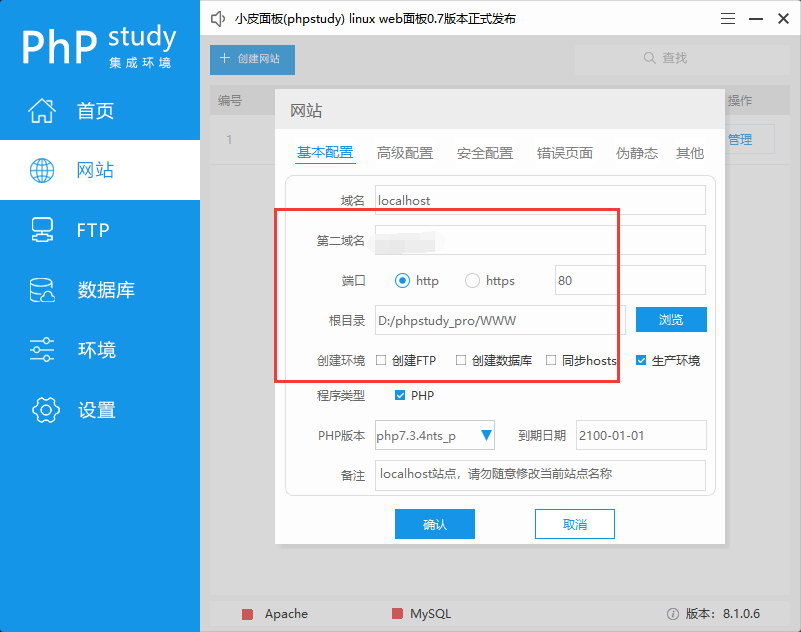
只不过需要一个SSL证书，这个倒不是什么大问题，我的网站之前就有证书，直接拿下来用，改下host就可以了。
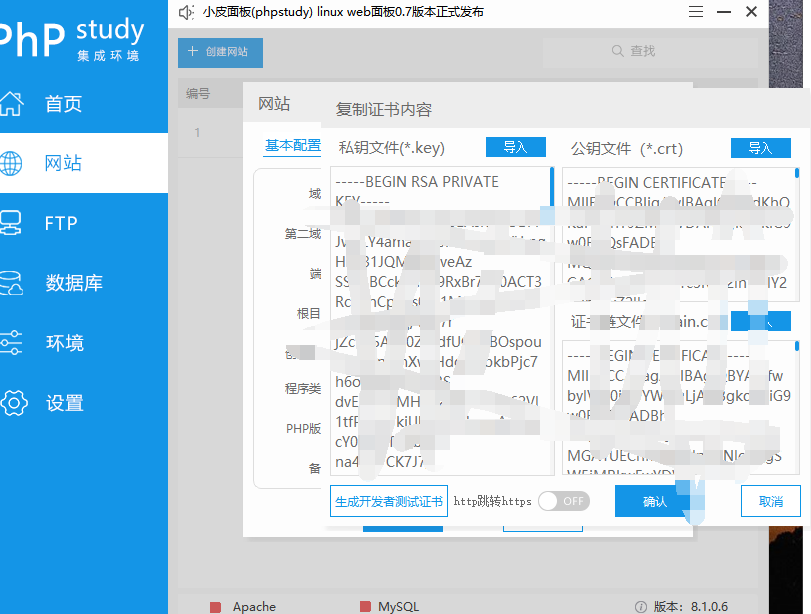
改好之后便可以通过https://localhost来访问本地服务器中的文件了！
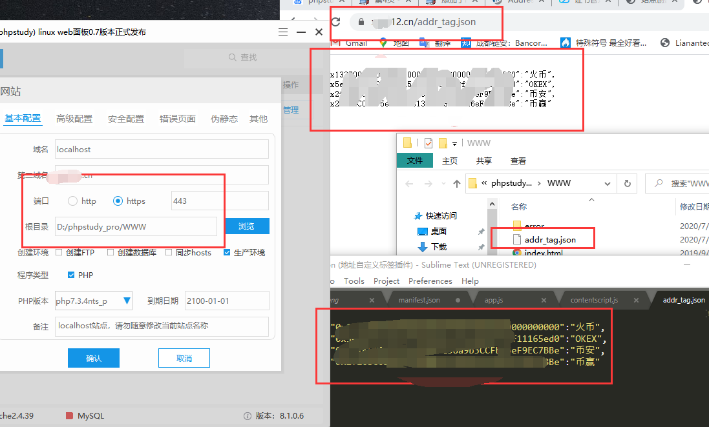
在js中使用Jquery获取数据：
$.getJSON("https://xxxxx.cn:18081",function(result){
for(var key in result){
tag[key.toLowerCase()] = result[key]
}
});
然后是nodejs搭建本地服务器的方式，使用了express框架。
参考文章：
全部代码如下所示：
var app = require('express')();
var fs = require('fs');
var http = require('http');
var https = require('https');
var privateKey = fs.readFileSync("./https/https.key", 'utf8');
var certificate = fs.readFileSync("./https/https.crt", 'utf8');
var credentials = {key: privateKey, cert: certificate};
var httpServer = http.createServer(app);
var httpsServer = https.createServer(credentials, app);
var PORT = 18080;
var SSLPORT = 18081;
//设置允许跨域
app.all('*',function(req,res,next){
res.header("Access-Control-Allow-Origin","*");
res.header("Access-Control-Allow-Methods","PUT,GET,POST,DELETE,OPTIONS");
res.header('Access-Control-Allow-Headers', 'Content-Type, Content-Length, Authorization, Accept, X-Requested-With , yourHeaderFeild');
next();
});
httpServer.listen(PORT, function() {
console.log('HTTP Server is running on: http://localhost:%s', PORT);
});
httpsServer.listen(SSLPORT, function() {
console.log('HTTPS Server is running on: https://localhost:%s', SSLPORT);
});
// Welcome
app.get('/', function(req, res) {
if(req.protocol === 'https') {
var file="./addr_tag.json";
var result=JSON.parse(fs.readFileSync(file));
console.log(result)
res.send(result)
}
else {
res.status(200).send('Welcome!');
}
});
在采用nodejs方式搭建时，由于有了phpstudy的失败经历，nodejs直接选择了https形式的搭建，过程中没有在遇到其他的问题，成功实现了数据的获取。
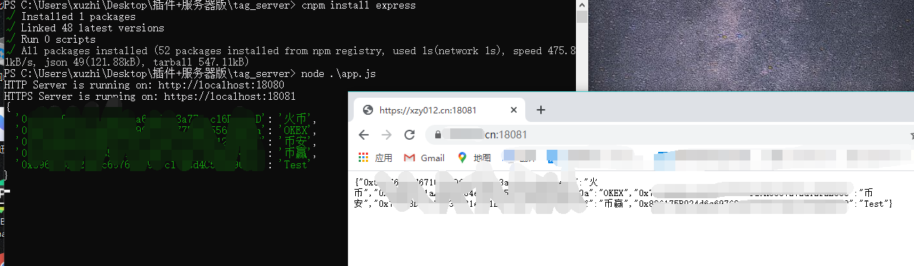
做完之后，不禁想到，搭建服务器的方式有点太复杂了，https证书也麻烦，于是又想了一下。想到了直接在插件的js文件中保存数据即可，直接将数据存入addr_tag.js文件中，在manifest文件中导入后，直接在contentscript.js文件中使用即可，以后每次修改数据直接在add_tag文件中修改即可，不需要经历繁琐的步骤去搭建服务器了。
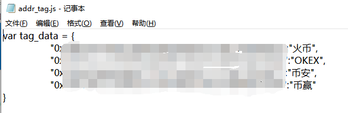
后来第二天上班的时候，把我做好的这个两个版本给同事看了之后，他问我为啥不用localstorage来存储数据？？？Excuse me？？？为啥我把这个给忘了！
于是我又改了改代码，直接使用localstorage.getItem来获取里面的数据，然后在加载到页面上。
var tokenTag = document.getElementsByClassName('hash-tag text-truncate');
for(var x =0;x<tokenTag.length;x++){
if(localStorage.getItem((ethTag[x].innerText.toLowerCase()))!=undefined){
tokenTag[x].innerText = 'Local:'+localStorage.getItem(ethTag[x].innerText.toLowerCase());
}
}
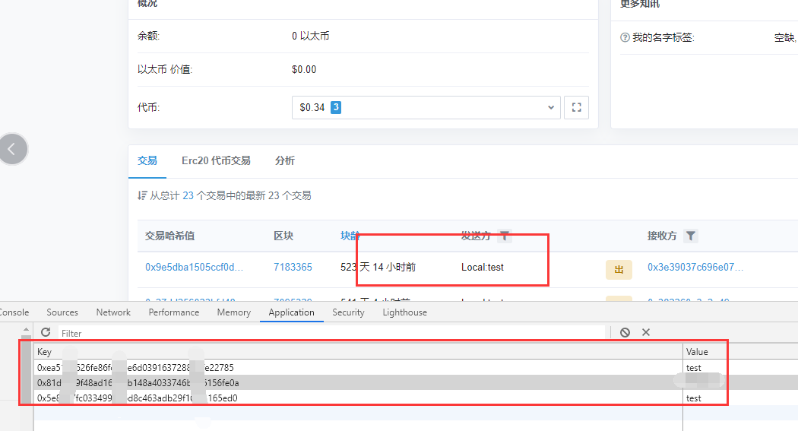
虽然能够避免繁琐的前置步骤了，但在使用中，同
事又提出了新的”需求“——每次更新数据都要打开F12，太麻烦了。
参考文章：
于是有了下面的代码：
var MyDiv =document.getElementById("logoAndNav");
var addr_data =document.createElement('input');
addr_data.setAttribute('type', 'text');//输入框的类型
addr_data.setAttribute("placeholder", "地址");
addr_data.setAttribute('id','addr_data')
addr_data.style.width = "16%";
MyDiv.appendChild(addr_data);
var tag_data =document.createElement('input');
tag_data.setAttribute('type', 'text');//输入框的类型
tag_data.setAttribute("placeholder", "标签名");
tag_data.setAttribute('id','tag_data')
tag_data.style.width = "16%";
MyDiv.appendChild(tag_data);
var button = document.createElement("input");
button.setAttribute("type", "button");
button.setAttribute("value", "添加/修改标签");
button.style.width = "17%";
button.setAttribute("onclick",
"javascript:\
var addr_data = document.getElementById('addr_data'); \
var tag_data = document.getElementById('tag_data'); \
if(addr_data.value!=''&&tag_data.value!=''){\
localStorage.setItem(addr_data.value.toLowerCase(),tag_data.value);\
document.location.reload();\
}\
else{\
alert(\"请输入数据哦！\")\
}\
"
)
MyDiv.appendChild(button);
var button2 = document.createElement("input");
button2.setAttribute("type", "button");
button2.setAttribute("value", "删除标签");
button2.style.width = "17%";
button2.setAttribute("onclick",
"javascript:\
var addr_data = document.getElementById('addr_data'); \
if(addr_data.value!=''){\
localStorage.removeItem(addr_data.value.toLowerCase());\
document.location.reload();\
}\
else{\
alert(\"请输入要删除的地址哦！\")\
}\
"
)
MyDiv.appendChild(button2);
var button3 = document.createElement("input");
button3.setAttribute("type", "button");
button3.setAttribute("value", "导出标签");
button3.style.width = "17%";
button3.setAttribute("onclick",
"javascript:\
var output_data={};\
for(var i=0;i<localStorage.length;i++){\
output_data[localStorage.key(i)] = localStorage.getItem(localStorage.key(i));\
}\
function download(filename, text) {\
var pom = document.createElement('a');\
pom.setAttribute('href', 'data:text/plain;charset=utf-8,' + encodeURIComponent(text));\
pom.setAttribute('download', filename);\
if (document.createEvent) {\
var event = document.createEvent('MouseEvents');\
event.initEvent('click', true, true);\
pom.dispatchEvent(event)\
} else {\
pom.click();\
}\
}\
download('tag_data.txt',JSON.stringify(output_data));\
"
)
MyDiv.appendChild(button3);
var inputObj=document.createElement('input')
inputObj.setAttribute('id','upload_data');
inputObj.setAttribute('type','file');
inputObj.setAttribute("style",'visibility:hidden');
document.body.appendChild(inputObj);
var button4 = document.createElement("input");
button4.setAttribute("type", "button");
button4.setAttribute("value", "批量导入标签");
button4.style.width = "17%";
button4.setAttribute("onclick",
"javascript:\
var input =document.getElementById('upload_data');\
input.click();\
input.addEventListener('change',()=>{\
var reader = new FileReader();\
reader.readAsText(input.files[0],'utf8');\
reader.onload = ()=>{\
var input_data = JSON.parse(reader.result);\
for(var key in input_data){\
localStorage.setItem(key,input_data[key]);\
}\
document.location.reload();\
}\
}, false); \
")
MyDiv.appendChild(button4);
上面代码实现了在etherscan的页面上添加了两个输入框和四个按钮，分别是地址、标签的输入以及添加/修改标签按钮、删除标签按钮、导出标签按钮和批量导入标签按钮。
最终效果：

2020.07.17更新
上个版本的插件已经能够满足日常的基本使用了，但是由于localStorage的5M大小的限制，使得标签的数量被限制在了10W以下（利用假数据简单测试结果是7W多条），为了能够储存更多的数据，不得不放弃localstorage从而寻找新的思路。
查阅资料可以使用chrome.storage，通过在赋予unlimitedStorage权限，在本地存储区储存的数据量大小不受限制。但在实际使用过程中遇到了chrome.storage未定义的问题，有可能是我的使用方式存在问题，查询大量资料之后无果，遂放弃。
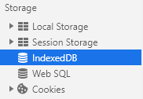
在Storage中，一共有五个储存数据的地方，如上图所示，详细介绍如下表所示：
| sessionStorage | sessionStorage是个全局对象，它维护着在页面会话(page session)期间有效的存储空间。只要浏览器开着，页面会话周期就会一直持续。当页面重新载入(reload)或者被恢复(restores)时，页面会话也是一直存在的。每在新标签或者新窗口中打开一个新页面，都会初始化一个新的会话。 |
|---|---|
| localStorage | localStorage与sessionStorage相同，但应用了相同的规则，但它是持久性的。LocalStorage 在 2.5MB 到 10MB 之间（各家浏览器不同），而且不提供搜索功能，不能建立自定义的索引。 |
| IndexedDB | 通俗地说，IndexedDB 就是浏览器提供的本地数据库，它可以被网页脚本创建和操作。IndexedDB 允许储存大量数据，提供查找接口，还能建立索引。这些都是 LocalStorage 所不具备的。就数据库类型而言，IndexedDB 不属于关系型数据库（不支持 SQL 查询语句），更接近 NoSQL 数据库。 |
| WebSQL | WebSQL是一个在浏览器客户端的结构关系数据库，这是浏览器内的本地RDBMS(关系型数据库系统) |
| cookies | 用于保存登陆信息 |
localStorage和sessionStorage都有着大小的限制，且存储的数据类型只能是键值对形式。
IndexedDB_API中推荐8种使用IndexedDB的更方便的方式：
| localForage | 一个简单名称的Polyfill：客户端数据存储的值语法，它在后台使用IndexedDB，但在不支持IndexedDB的浏览器中回退到WebSQL或localStorage。 |
|---|---|
| Dexie.js | IndexedDB的包装器，通过简单的语法，可以更快地进行代码开发。 |
| ZangoDB | 类似MongoDB的IndexedDB接口，支持MongoDB的大多数熟悉的过滤，投影，排序，更新和聚合功能。 |
| JsStore | 一个带有SQL语法的IndexedDB包装器。 |
| MiniMongo | 由localstorage支持的客户端内存中的mongodb，通过http进行服务器同步。MeteorJS使用MiniMongo。 |
| PouchDB | 使用IndexedDB在浏览器中实现CouchDB的客户端。 |
| idb | 一个微小的（〜1.15k）库，主要反映了IndexedDB的API，但小的改进，使一个很大的区别的可用性。 |
| idb-keyval | 使用IndexedDB实现的超简单小（~600B）基于Promise的键值存储。 |
本次我采用的是localForage。
引入localforage.js文件文件后便可以利用localforage中定义的方法来进行indexedDB的使用了，而不需要去写复杂的语句。
插件中使用localforage很顺利，但在网页上使用出现了问题：提示localforage未定义。
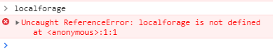
查阅资料后，在【干货】Chrome插件(扩展)开发全攻略这篇文章中看到，文中提到content-script只能操作DOM，但DOM却不能调用它，也就是说DOM没办法直接使用插件内部的js文件，只有通过向页面注入代码后才能调用，注入代码如下所示：
// 向页面注入JS
function injectCustomJs(jsPath)
{
jsPath = jsPath || 'js/inject.js';
var temp = document.createElement('script');
temp.setAttribute('type', 'text/javascript');
// 获得的地址类似：chrome-extension://ihcokhadfjfchaeagdoclpnjdiokfakg/js/inject.js
temp.src = chrome.extension.getURL(jsPath);
temp.onload = function()
{
// 放在页面不好看，执行完后移除掉
this.parentNode.removeChild(this);
};
document.head.appendChild(temp);
}
此外，还需要在配置文件中添加如下配置，不然会报 Resources must be listed in the web_accessible_resources manifest key in order to be loaded by pages outside the extension.
// 普通页面能够直接访问的插件资源列表，如果不设置是无法直接访问的
"web_accessible_resources": ["js/inject.js"],
向页面注入localforage.js后发现，能够使用localforage了：
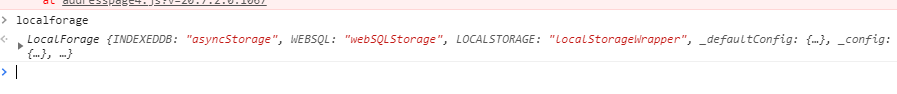
localforage的使用可以参考这个网站：http://localforage.docschina.org/
localforage简单测试：
window.onload=function(){
localforage.setItem('key', 'value').then(
localforage.getItem('key', function(err, value) {
// 当离线仓库中的值被载入时，此处代码运行
console.log(value);
})
)
}
导入插件后，刷新网页可以发现，成功插入了键值对key：value。
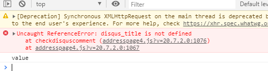
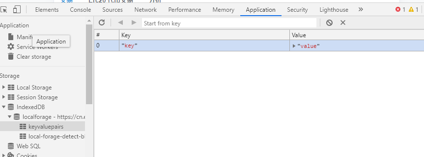
此外，如果想要打包扩展程序后生成crx文件后在其他浏览器中导入，如果没有在chrome商店中上传并通过审核，会遇到如下问题：
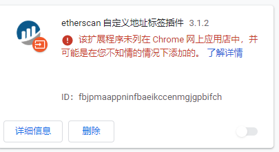
解决方案有两个：
第一个当然是花费5刀注册为chrome插件开发者，然后上传自己的插件，不过这种方式耗时很长，短期可以选择另一种方式；
第二个是修改本地组策略，在已解决!该扩展程序未列在 Chrome 网上应用店中，并可能是在您不知情的情况下添加的这篇文章中介绍很详细。
最后
完结撒花★,°:.☆(￣▽￣)/$:.°★ 。，虽然本次尝试制作的插件功能比较简单，但却对我来说有实际的价值，大佬们不喜勿喷。
PS：经过了近一年的审核，插件上架了啊哈哈哈哈~
chrome插件商店地址：Custom Address Tag
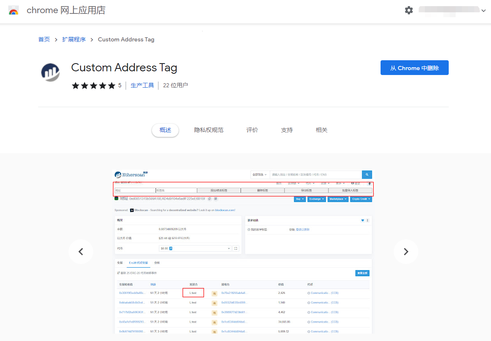